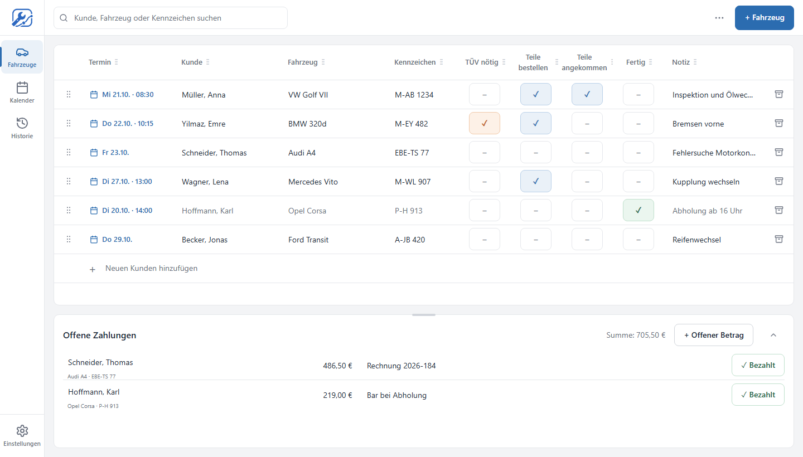

Alle Fahrzeuge, Arbeiten und offenen Zahlungen auf einen Blick.
Werkstatt Motion ist eine kostenlose Desktop-App für kleine Werkstätten. Keine verschachtelten Menüs, kein Konto, kein Abo – öffnen und loslegen. Sie läuft unter Windows und Linux, auch ganz ohne Internet.

Was die App kann
Fahrzeuge und Kunden
Kunde, Fahrzeug und Kennzeichen eintragen, gespeichert wird von selbst. Suchen nach Name, Kennzeichen oder Modell.
Termine und Kalender
Termine direkt am Fahrzeug planen, auch live am Telefon, und im Monatskalender überblicken.
Arbeitsstand
TÜV nötig, Teile bestellt, Teile da, fertig – mit einem Klick markiert.
Offene Zahlungen
Offene Beträge sehen und mit einem Klick als bezahlt markieren. Erledigtes steht in der Historie.
Datensicherung
Jeden Tag automatisch, auf Wunsch zusätzlich auf USB-Stick oder Netzlaufwerk.
Deine Daten bleiben bei dir
Alles liegt auf deinem Computer. Keine Anmeldung, keine Werbung, keine Weitergabe.
Termine im Google Kalender (freiwillig)
Auf Wunsch schreibt Werkstatt Motion die Werkstatttermine in einen eigenen Kalender „Werkstatt Motion“ in deinem Google-Konto, zum Ansehen etwa auf dem Handy. Verbunden wird in der App unter Einstellungen › Kalender; die Anmeldung läuft im Browser direkt bei Google, die App sieht dein Passwort nie.
Neben der Anmeldung fragt die App dafür nach zwei Berechtigungen:
- Deine E-Mail-Adresse – damit die App anzeigen kann, welches Konto verbunden ist.
- Eigene Kalender anlegen und darin Termine verwalten – die App legt den Kalender „Werkstatt Motion“ an und trägt dort Termine ein, ändert und entfernt sie. Deine übrigen Kalender kann sie damit weder lesen noch ändern.
Zu Google gehen nur Datum, Uhrzeit und Fahrzeug, auf ausdrücklichen Wunsch auch Kundenname und Kennzeichen, Notizen nie. Die Daten gehen direkt von deinem Computer zu Google; der Entwickler erhält nichts. „Trennen“ löscht den Kalender bei Google und widerruft den Zugriff. Einzelheiten stehen in der Datenschutzerklärung.